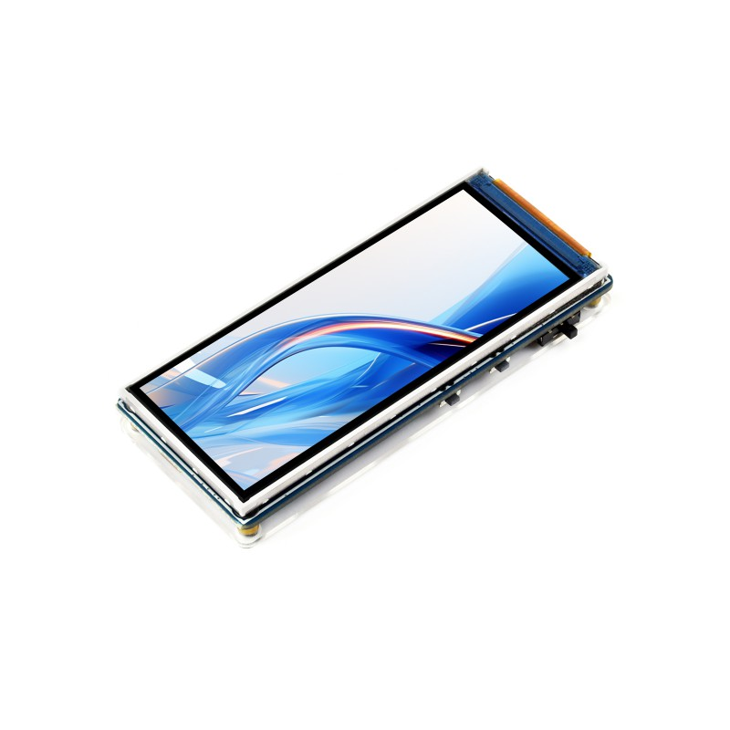
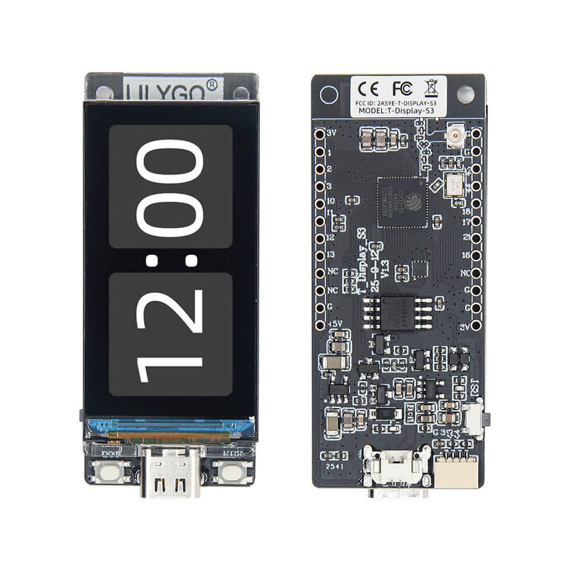
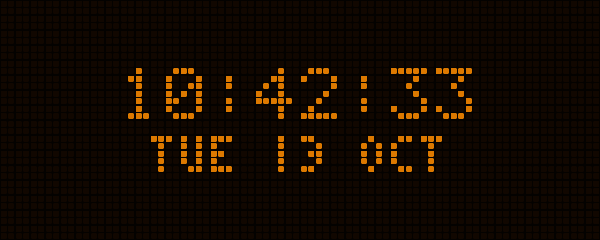
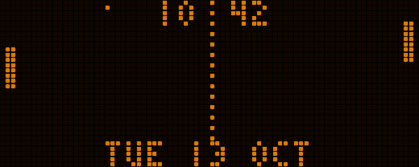
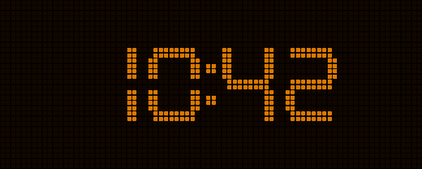
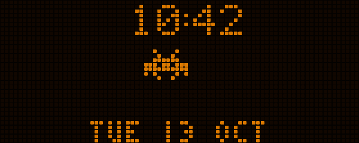
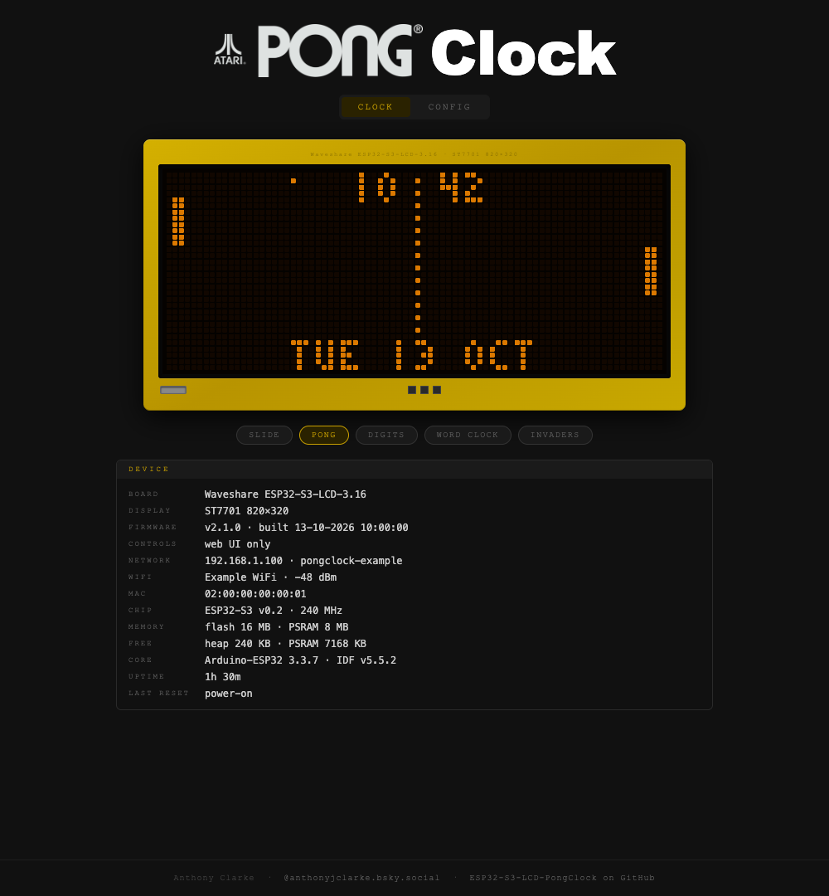
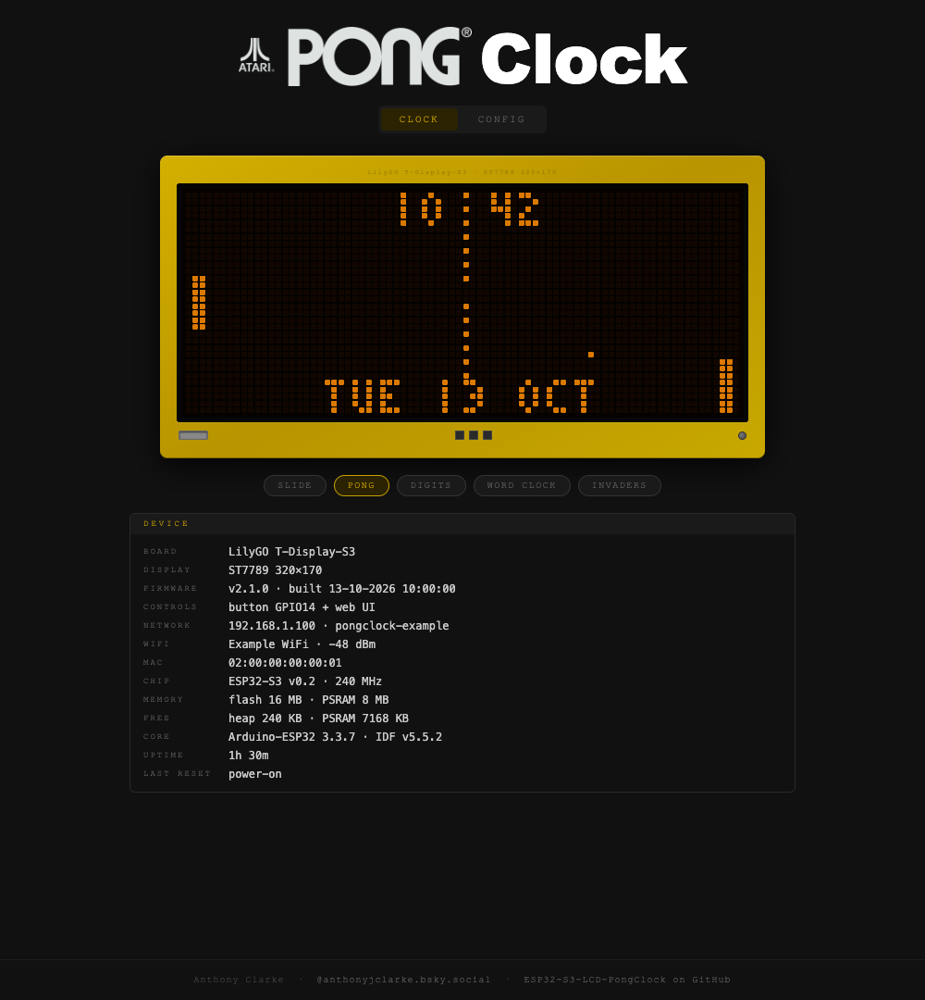
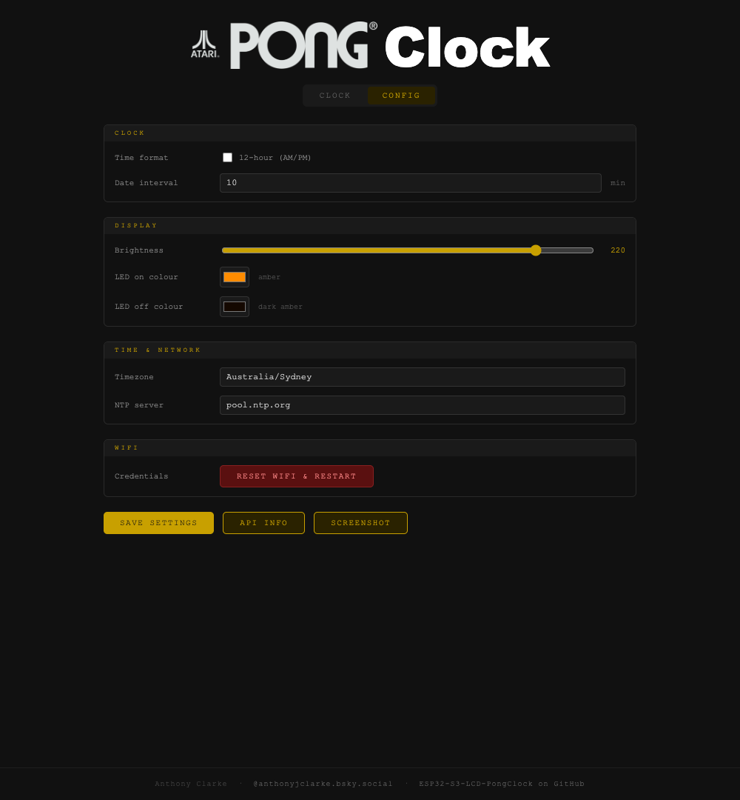

Waveshare ESP32-S3-LCD-3.16
3.16″ · 320 × 820 · ST7701 RGB display
16 MB flash · 8 MB PSRAM
Clock controls: web interface
ESP32-S3 · FIVE CLOCK MODES
Install the clock straight from your browser. Firmware and the device’s web interface are included.
Code, hardware details & build instructions ↗
Check the name printed on your board. Both use an ESP32-S3, so the browser cannot distinguish their displays. Choosing the wrong firmware can leave the screen blank.

3.16″ · 320 × 820 · ST7701 RGB display
16 MB flash · 8 MB PSRAM
Clock controls: web interface

1.9″ · 170 × 320 · ST7789 display
16 MB flash · 8 MB PSRAM
Clock controls: KEY button + web interface
Board photos: Waveshare and LilyGO. Screens shown in these manufacturer photos are their demos.
For these two boards only. Other Waveshare displays, the original T-Display, T-Display-S3 AMOLED and T-Display-S3 Pro need different firmware. Touch input is not supported.
If a transfer fails, enter download mode again and retry. The PlatformIO instructions provide an alternative.
Press RST on your board to start the clock.
Loading installer…
Examples captured from PongClock’s browser preview. These show one animation frame; both boards share the same LED-grid layout.




Open the clock’s IP address to switch modes, adjust brightness and colours, or set your timezone.
Actual web UI screenshots with example device and network details. The pictured PCB is the UI’s illustration.


